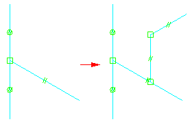
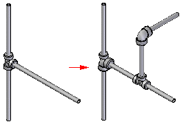

Including additional fittings and pipes
You can include additional fittings and pipes to an existing pipe group by drawing the additional pipe segments connected to the existing geometry.

The global pipe attributes are inherited from the existing path definition to the new path segments. After specifying the fitting type, you can select the new path segment, then click Preview to create the pipe route.
